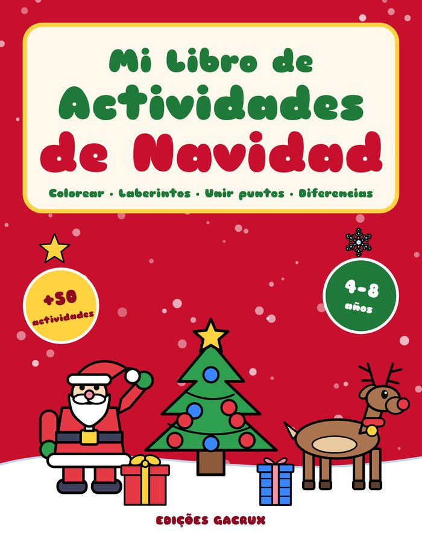
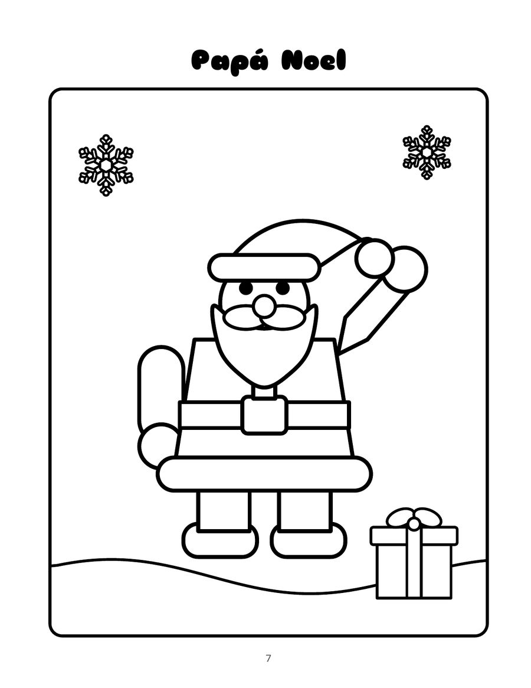
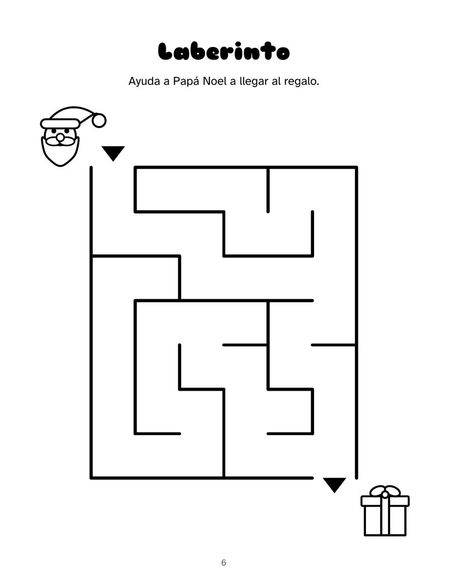
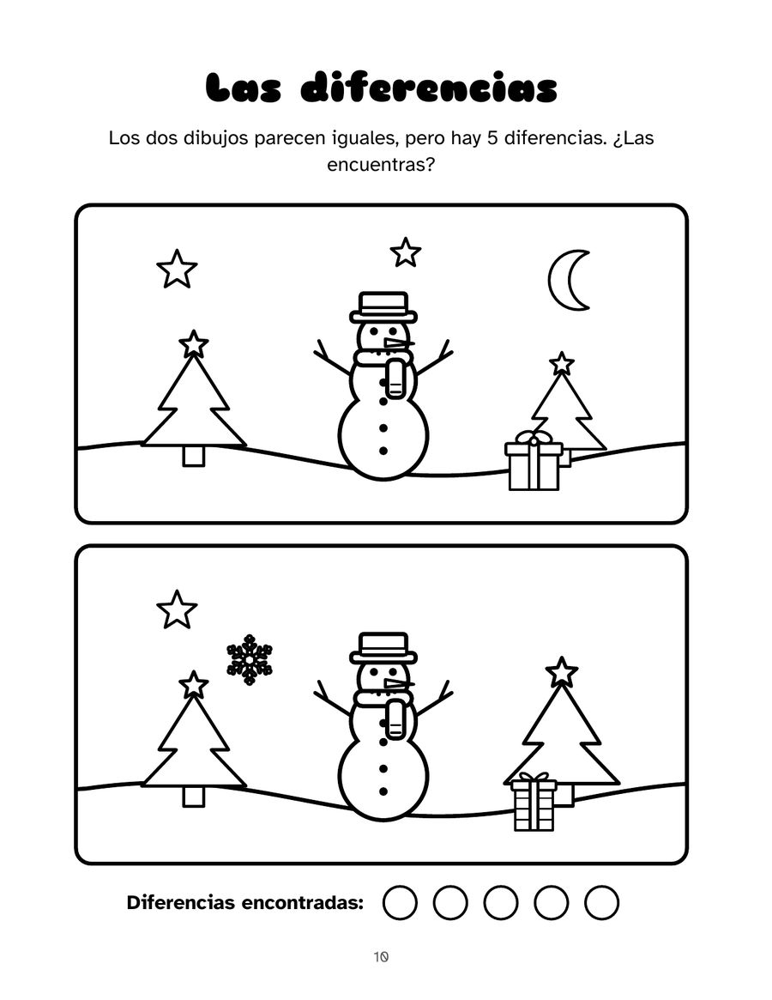

Español (España)
Mi Libro de Actividades de Navidad
Para niños y niñas de 4 a 8 años
Más de 50 juegos y dibujos para colorear de Navidad en un solo cuaderno, todo en español de España. Líneas gruesas y zonas grandes, pensadas para manos pequeñas: un plan sin pantallas para las vacaciones de invierno.
PDF con 4 páginas del libro, listo para imprimir. Muestras gratuitas para uso personal y en el aula.
64 páginas · 21,6 × 27,9 cm · tapa blanda · Edições Gacrux
Qué hay en el libro
- 26 dibujos para colorear: el árbol, Papá Noel, el reno, el Belén, los Reyes Magos y más
- 6 laberintos y 6 dibujos de unir puntos
- 4 juegos de las diferencias y 4 sopas de letras fáciles
- Busca la sombra, contar y repasar trazos
- Carta a Papá Noel y a los Reyes Magos
- Soluciones al final del libro
Así es por dentro
Toca una página para verla más grande.





